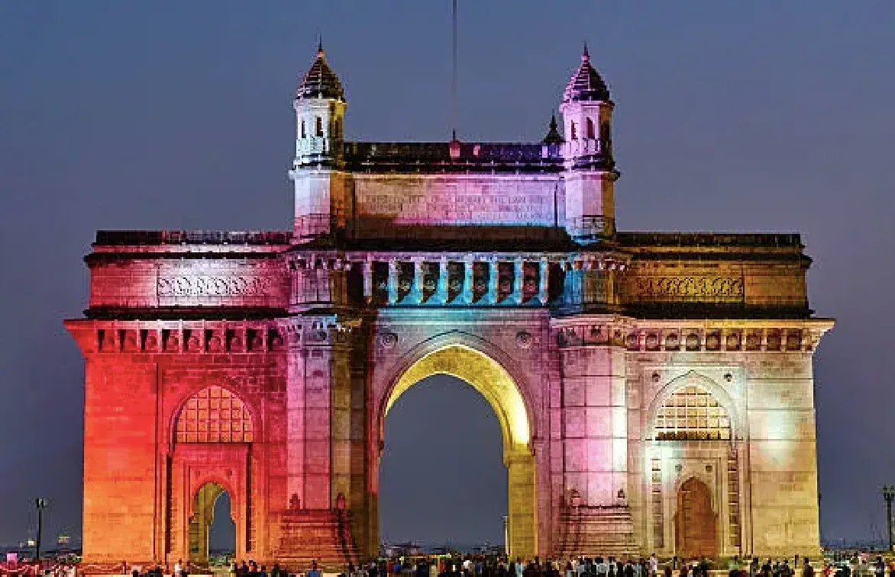
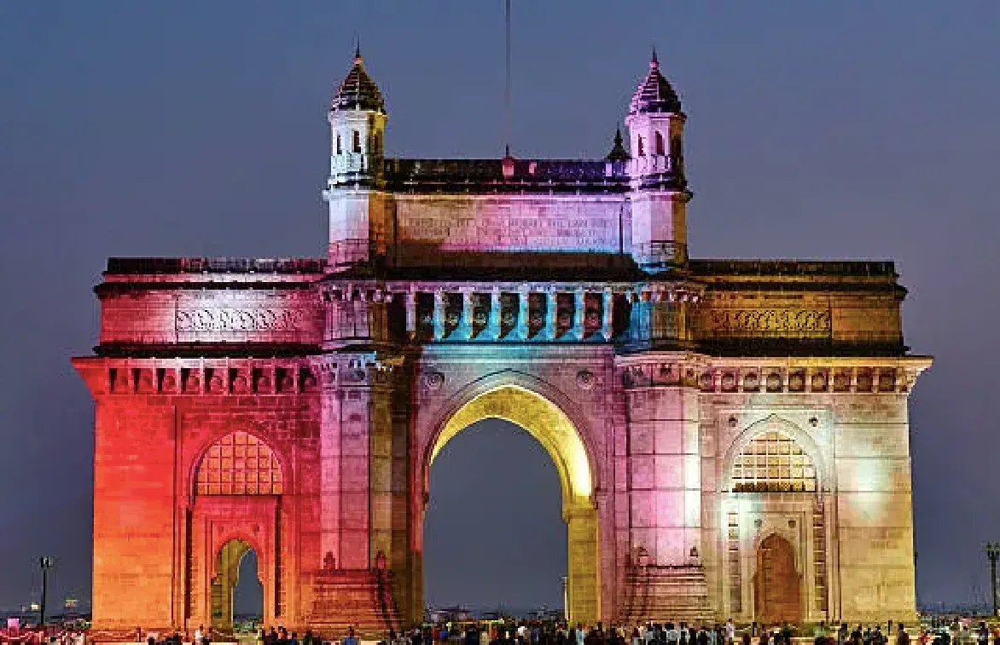

Gateway of India, Mumbai
The Iconic Monument of Mumbai
The Iconic Monument of Mumbai
The Gateway of India, located in South Mumbai, is one of the city’s most famous landmarks. Built in 1924, it was constructed to commemorate the visit of King George V and Queen Mary to India in 1911. Overlooking the Arabian Sea, it is a beautiful arch monument that blends Indo-Saracenic architecture with elements of Muslim and Hindu styles.
The Gateway of India is well-connected through Mumbai’s suburban railway:
 
